- Galaxy Zoo Mergers is a
 project
project
- ...just like 

Data collection for Galaxy Zoo Mergers is closed.
We may collect the following information:
We require this information to understand your needs and provide you with a better service, and in particular for the following reasons:
We are committed to ensuring that your information is secure. To prevent unauthorised access or disclosure we have put in place suitable physical, electronic and managerial procedures to safeguard and secure the information we collect online.
A cookie is a small file that asks permission to be placed on your computer's hard drive. Once you agree, the file is added and the cookie helps analyse web traffic or lets you know when you visit a particular site. Cookies allow web applications to respond to you as an individual. The web application can tailor its operations to your needs, likes and dislikes by gathering and remembering information about your preferences. We use traffic log cookies to identify which pages are being used. This helps us analyse data about web page traffic and improve our website in order to tailor it to customer needs. We only use this information for statistical analysis purposes and then the data is removed from the system. Overall, cookies help us provide you with a better website, by enabling us to monitor which pages you find useful and which you do not. A cookie in no way gives us access to your computer or any information about you, other than the data you choose to share with us. You can choose to accept or decline cookies. Most web browsers automatically accept cookies, but you can usually modify your browser setting to decline cookies if you prefer. However, this may prevent you from taking full advantage of the website.
Our website may contain links to enable you to visit other websites of interest easily. However, once you have used these links to leave our site, you should note that we do not have any control over that other website. Therefore, we cannot be responsible for the protection and privacy of any information which you provide whilst visiting such sites, and such sites are not governed by this privacy statement. You should exercise caution and look at the privacy statement applicable to the website in question.